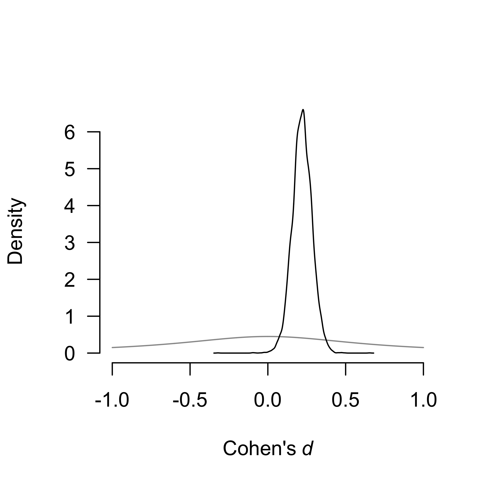
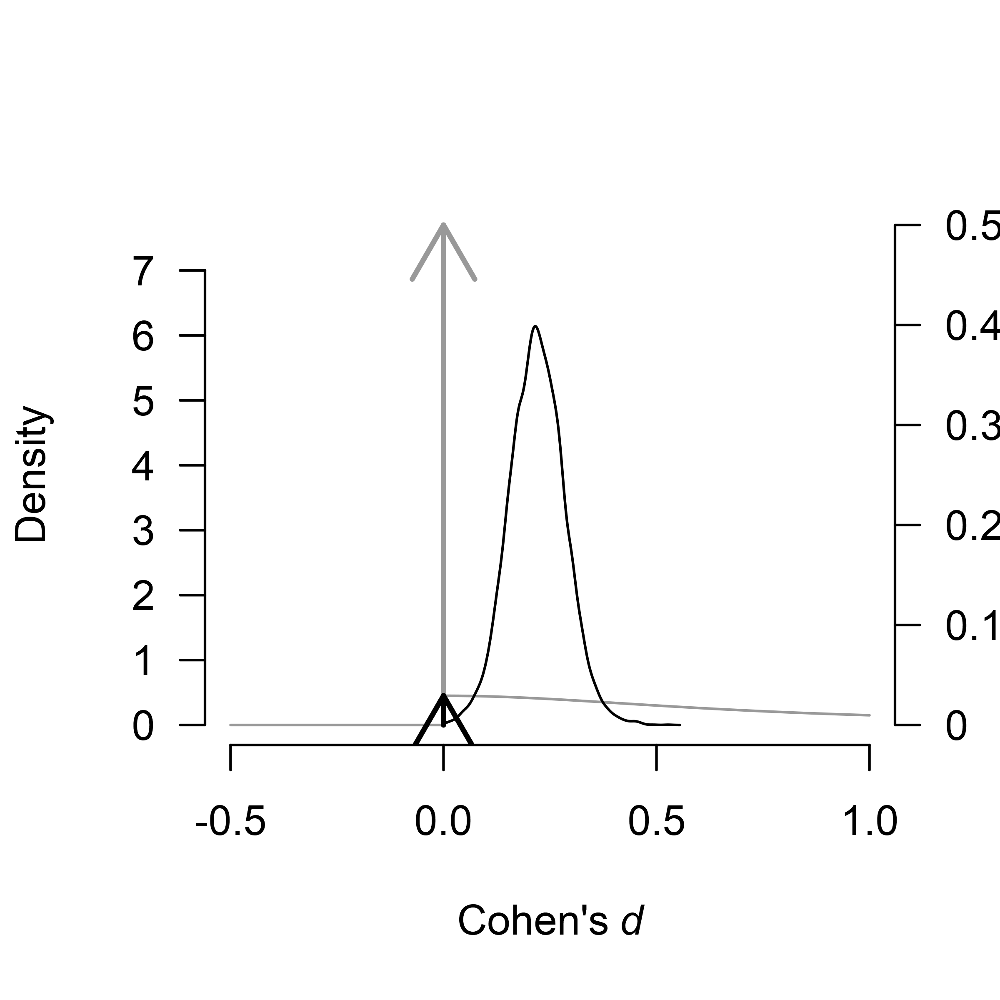
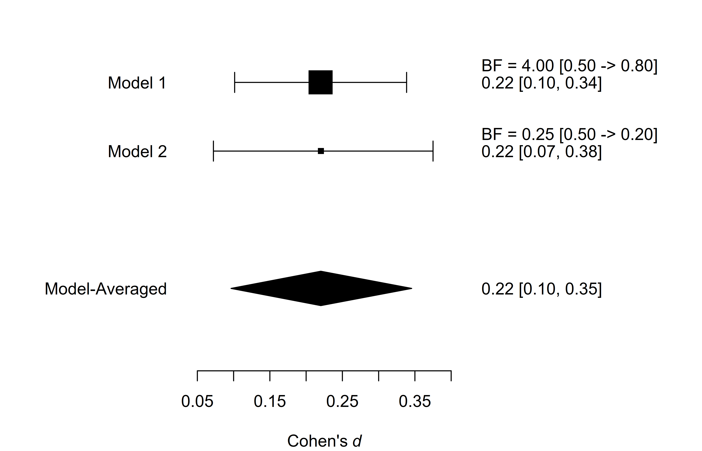
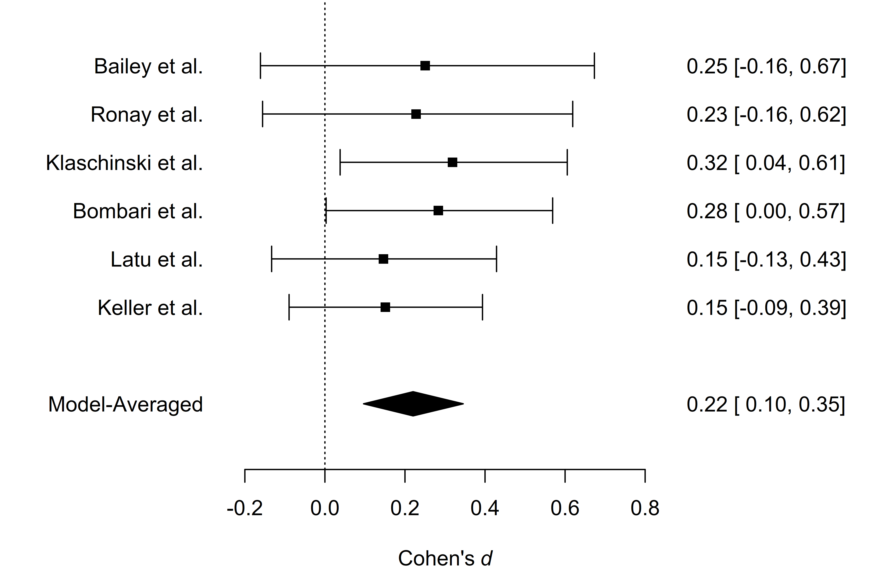

Reproducing Bayesian Model-Averaged Meta-Analysis
František Bartoš
2025-07-30
Source:vignettes/ReproducingBMA.Rmd
ReproducingBMA.RmdBy default, the RoBMA package estimates an ensemble of 36 meta-analytic models and provides functions for convenient manipulation of the fitted object. However, the package has been designed so it can be used as a framework for estimating any combination of meta-analytic models (or a single model). Here, we illustrate how to build a custom ensemble of meta-analytic models - specifically the same ensemble that is used in ‘classical’ Bayesian Model-Averaged Meta-Analysis (Bartoš et al., 2021; Gronau et al., 2017, 2021). See this vignette if you are interested in building more customized ensembles or Bartoš et al. (2022) for a tutorial on fitting (custom) models in JASP.
Reproducing Bayesian Model-Averaged Meta-Analysis (BMA)
We illustrate how to fit a classical BMA (not adjusting for
publication bias) using RoBMA. For this purpose, we
reproduce a meta-analysis of registered reports on Power posing by Gronau et al. (2017). We focus only on the
analysis of all reported results using a Cauchy prior distribution with
scale
for the effect size estimation (half-Cauchy for testing) and
inverse-gamma distribution with shape = 1 and scale = 0.15 for the
heterogeneity parameter. You can find the figure from the original
publication here
and the paper’s supplementary materials at https://osf.io/fxg32/.
First, we load the power posing data provided within the metaBMA package and reproduce the analysis performed by Gronau et al. (2017).
data("power_pose", package = "metaBMA")
power_pose[,c("study", "effectSize", "SE")]
#> study effectSize SE
#> 1 Bailey et al. 0.2507640 0.2071399
#> 2 Ronay et al. 0.2275180 0.1931046
#> 3 Klaschinski et al. 0.3186069 0.1423228
#> 4 Bombari et al. 0.2832082 0.1421356
#> 5 Latu et al. 0.1463949 0.1416107
#> 6 Keller et al. 0.1509773 0.1221166
fit_BMA_test <- metaBMA::meta_bma(y = power_pose$effectSize, SE = power_pose$SE,
d = metaBMA::prior(family = "halfcauchy", param = 1/sqrt(2)),
tau = metaBMA::prior(family = "invgamma", param = c(1, .15)))
fit_BMA_est <- metaBMA::meta_bma(y = power_pose$effectSize, SE = power_pose$SE,
d = metaBMA::prior(family = "cauchy", param = c(0, 1/sqrt(2))),
tau = metaBMA::prior(family = "invgamma", param = c(1, .15)))
fit_BMA_test$inclusion
#> ### Inclusion Bayes factor ###
#> Model Prior Posterior included
#> 1 fixed_H0 0.25 0.00868
#> 2 fixed_H1 0.25 0.77745 x
#> 3 random_H0 0.25 0.02061
#> 4 random_H1 0.25 0.19325 x
#>
#> Inclusion posterior probability: 0.971
#> Inclusion Bayes factor: 33.136
round(fit_BMA_est$estimates,2)
#> mean sd 2.5% 50% 97.5% hpd95_lower hpd95_upper n_eff Rhat
#> averaged 0.22 0.06 0.09 0.22 0.34 0.09 0.34 NA NA
#> fixed 0.22 0.06 0.10 0.22 0.34 0.10 0.34 3026.5 1
#> random 0.22 0.08 0.07 0.22 0.37 0.07 0.37 6600.4 1From the output, we can see the inclusion Bayes factor for the effect
size was
and the effect size estimate 0.22, 95% HDI [0.09, 0.34], which matches
the reported results. Please note that the metaBMA package
model-averages only across the
models, whereas the RoBMA package model-averages across all
models (assuming the presence and absence of the effect).
Using RoBMA
Now we reproduce the analysis with RoBMA. We set the
corresponding prior distributions for effect sizes
()
and heterogeneity
(),
and remove the alternative prior distributions for the publication bias
by setting priors_bias = NULL. To specify the half-Cauchy
prior distribution with the RoBMA::prior() function we use
a regular Cauchy distribution and truncate it at zero (note that both
metaBMA and RoBMA export their own
prior() functions that will clash when loading both
packages simultaneously). The inverse-gamma prior distribution for the
heterogeneity parameter is the default option (we specify it for
completeness). We omit the specifications for the null prior
distributions for the effect size, heterogeneity (both of which are set
to a spike at 0 by default), and publication bias (which is set to no
publication bias by default). Note that starting from version 3.1, the
package includes the NoBMA() function, which allows users
to skip publication bias adjustment directly.
Since metaBMA model-averages the effect size estimates
only across the models assuming presence of the effect, we remove the
models assuming absence of the effect from the estimation ensemble with
priors_effect_null = NULL. Finally, we set
transformation = "cohens_d" to estimate the models on
Cohen’s d scale. RoBMA uses Fisher’s z scale by
default and transforms the estimated coefficients back to the scale that
is used for specifying the prior distributions. We speed up the
computation by setting parallel = TRUE, and set a seed for
reproducibility.
library(RoBMA)
fit_RoBMA_test <- RoBMA(d = power_pose$effectSize, se = power_pose$SE, study_names = power_pose$study,
priors_effect = prior(
distribution = "cauchy",
parameters = list(location = 0, scale = 1/sqrt(2)),
truncation = list(0, Inf)),
priors_heterogeneity = prior(
distribution = "invgamma",
parameters = list(shape = 1, scale = 0.15)),
priors_bias = NULL,
transformation = "cohens_d", seed = 1, parallel = TRUE)
fit_RoBMA_est <- RoBMA(d = power_pose$effectSize, se = power_pose$SE, study_names = power_pose$study,
priors_effect = prior(
distribution = "cauchy",
parameters = list(location = 0, scale = 1/sqrt(2))),
priors_heterogeneity = prior(
distribution = "invgamma",
parameters = list(shape = 1, scale = 0.15)),
priors_bias = NULL,
priors_effect_null = NULL,
transformation = "cohens_d", seed = 2, parallel = TRUE)
summary(fit_RoBMA_test)
#> Call:
#> RoBMA(d = power_pose$effectSize, se = power_pose$SE, study_names = power_pose$study,
#> transformation = "cohens_d", priors_effect = prior(distribution = "cauchy",
#> parameters = list(location = 0, scale = 1/sqrt(2)), truncation = list(0,
#> Inf)), priors_heterogeneity = prior(distribution = "invgamma",
#> parameters = list(shape = 1, scale = 0.15)), priors_bias = NULL,
#> parallel = TRUE, seed = 1)
#>
#> Robust Bayesian meta-analysis
#> Components summary:
#> Models Prior prob. Post. prob. Inclusion BF
#> Effect 2/4 0.500 0.971 33.112
#> Heterogeneity 2/4 0.500 0.214 0.273
#>
#> Model-averaged estimates:
#> Mean Median 0.025 0.975
#> mu 0.213 0.217 0.000 0.348
#> tau 0.022 0.000 0.000 0.178
#> The estimates are summarized on the Cohen's d scale (priors were specified on the Cohen's d scale).
summary(fit_RoBMA_est)
#> Call:
#> RoBMA(d = power_pose$effectSize, se = power_pose$SE, study_names = power_pose$study,
#> transformation = "cohens_d", priors_effect = prior(distribution = "cauchy",
#> parameters = list(location = 0, scale = 1/sqrt(2))),
#> priors_heterogeneity = prior(distribution = "invgamma", parameters = list(shape = 1,
#> scale = 0.15)), priors_bias = NULL, priors_effect_null = NULL,
#> parallel = TRUE, seed = 2)
#>
#> Robust Bayesian meta-analysis
#> Components summary:
#> Models Prior prob. Post. prob. Inclusion BF
#> Effect 2/2 1.000 1.000 Inf
#> Heterogeneity 1/2 0.500 0.200 0.250
#>
#> Model-averaged estimates:
#> Mean Median 0.025 0.975
#> mu 0.220 0.220 0.096 0.346
#> tau 0.019 0.000 0.000 0.152
#> The estimates are summarized on the Cohen's d scale (priors were specified on the Cohen's d scale).The output from the summary.RoBMA() function has 2
parts. The first one under the “Robust Bayesian Meta-Analysis” heading
provides a basic summary of the fitted models by component types
(presence of the Effect and Heterogeneity). The table summarizes the
prior and posterior probabilities and the inclusion Bayes factors of the
individual components. The results for the half-Cauchy model specified
for testing show that the inclusion BF is nearly identical to the one
computed by the metaBMA package,
.
The second part under the ‘Model-averaged estimates’ heading displays
the parameter estimates. The results for the unrestricted Cauchy model
specified for estimation show the effect size estimate
,
95% CI [0.10, 0.35] that also mirrors the one obtained from
metaBMA package.
Visualizing the Results
RoBMA provides extensive options for visualizing the results. Here, we visualize the prior (grey) and posterior (black) distribution for the mean parameter.

If we visualize the effect size from the model specified for testing,
we notice a few more things. The function plots the model-averaged
estimates across all models by default, including models assuming the
absence of the effect. The arrows represents the probability of a spike,
here, at the value 0. The secondary y-axis (right) shows the probability
of the value 0 decreased from 0.50, to 0.03 (also obtainable from the
“Robust Bayesian Meta-Analysis” field in the
summary.RoBMA() function). Furthermore, the continuous
prior distributions for the effect size under the alternative hypothesis
are truncated to only positive values, reflecting the assumption that
the effect size cannot be negative.

We can also visualize the estimates from the individual models used
in the ensemble. We do that with the plot_models()
function, which visualizes the effect size estimates and 95% CI of each
of the specified models from the estimation ensemble (Model 1
corresponds to the fixed effect model and Model 2 to the random effect
model). The size of the square representing the mean estimate reflects
the posterior model probability of the model, which is also displayed in
the right-hand side panel. The bottom part of the figure shows the
model-averaged estimate that is a combination of the individual model
posterior distributions weighted by the posterior model
probabilities.
plot_models(fit_RoBMA_est)
The last type of visualization that we show here is the forest plot.
It displays both the effect sizes from the original studies and the
overall meta-analytic estimate in a single figure. It can be requested
by using the forest() function.
forest(fit_RoBMA_est)
For more options provided by the plotting function, see its
documentation using ?plot.RoBMA(),
?plot_models(), and ?forest().